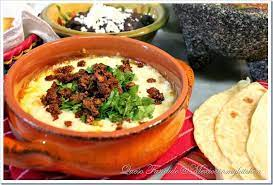

Description
A cheesy dip filled with flavor.
Ingredients
- 1 poblano chile
- 2 teaspoons vegetable oil
- 4 ounces fresh chorizo, pulled out of the casing
- 2 teaspoons hot sauce
- 1/2 teaspoon powdered adobo seasoning
- 6 ounces shredded Chihuahua cheese
- 2 scallions, chopped
- 1/2 cup cilantro, chopped
- Limes and tortillas for serving
Directions
- Roast chile on the stove or a grill
- Roughly chop after removing peel, stem, and seeds
- Cook chorizo in oil until browned and cooked through
- Turn on broiler
- Layer in a cast iron skillet:
- half of chile
- 1 tsp hot sauce
- 1/4 tsp adobo seasoning
- half of cheese
- Place in broiler and cook until cheese is starting to brown
- Remove from oven and repeat layers with remaining ingredients
- Broil until top begins to brown again
- Top with scallion and cilantro, and serve with limes and tortillas
Back to Main Menu